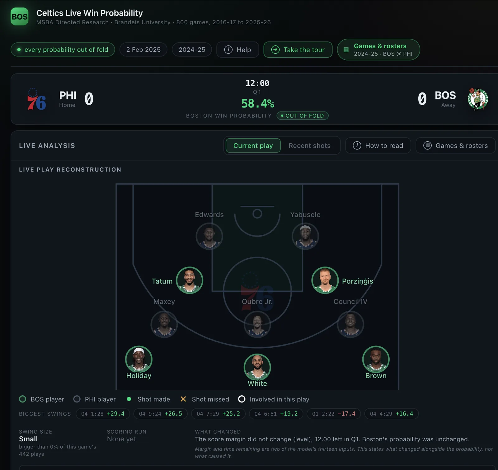
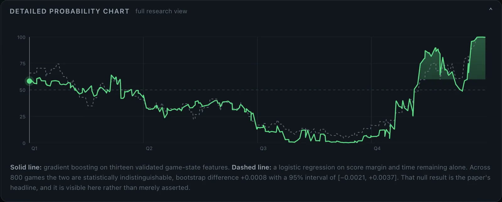
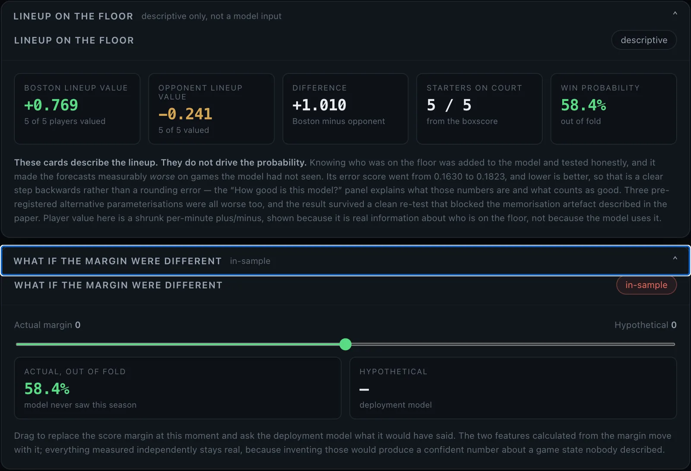
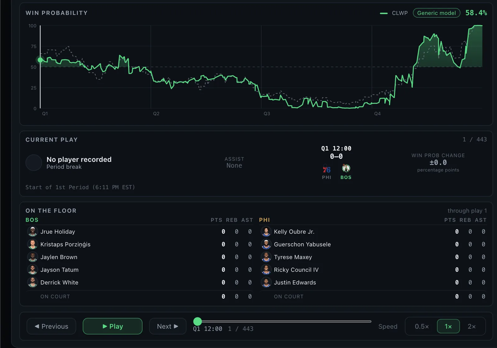
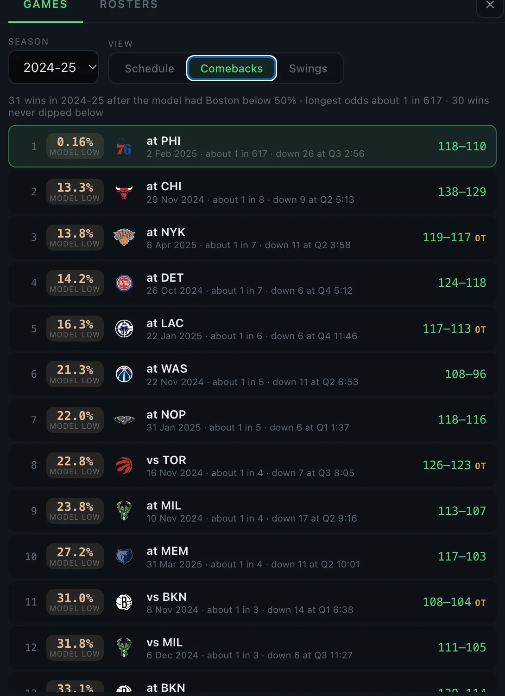
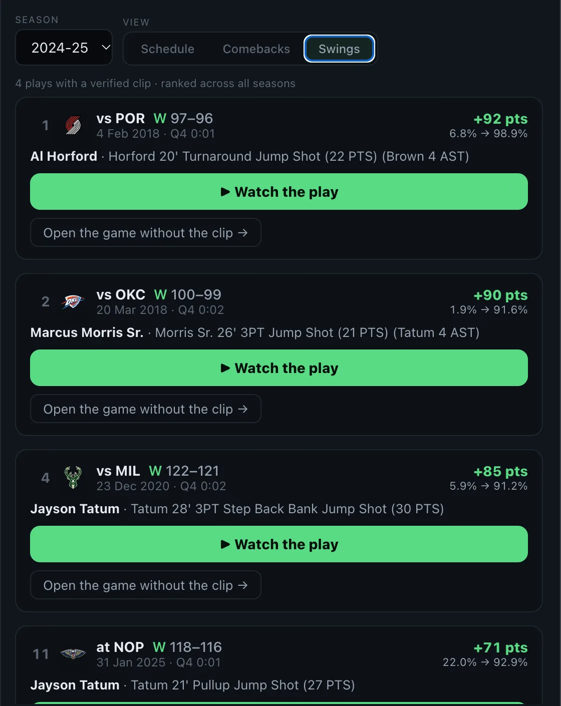
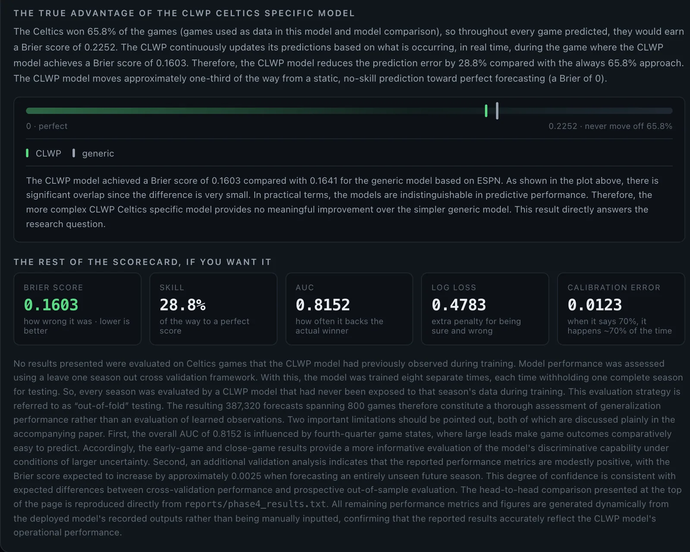

Directed research, Brandeis MSBA, 2026
Celtics Live Win Probability
Building a team-specific win probability model, and testing honestly whether it beats a simpler one.
I used AI coding tools (Claude) heavily throughout this project, especially for the dashboard.
The research study
- 8 seasons, 2016-17 to 2023-24
- 636 games, 308,975 plays
- Paper completed August 2026
- All results on this page come from this study
The current app
- 10 seasons, 2016-17 to 2025-26
- 800 games
- 2024-25 and 2025-26 added after the study
- Screenshots on this page show this version

The short answer
- Does a Celtics-specific model beat a score-and-clock model? Overall, no. The two were a statistical tie: a Brier score of 0.1630 for the Celtics model and 0.1641 for the generic model. The 95% interval for the difference runs from -0.0029 to +0.0048, which includes zero.
- Where does it help? Early in games. In the first six minutes, the generic model did slightly worse than always predicting Boston’s average win rate (skill of -0.3%). The Celtics model did slightly better (1.4%), with about 43% lower calibration error.
- Did knowing the five players on the floor help? No. It made forecasts worse, raising the Brier score to 0.1823.
- Did opponent strength help? No. All four versions tested made forecasts worse.
The question
Win probability numbers on broadcasts usually come from general models fit on every team at once, using little more than the score and the clock. I wanted to know whether a model built for one team, with more information about that team, would give better probabilities for that team’s games.
The data, and checking it
I pulled every Celtics regular-season game from 2016-17 to 2023-24 through nba_api: 636 games and 308,975 play-by-play events.
Before modeling anything, I checked the data against sources it didn’t come from. The rebuilt season records came to 413-223, matching the published records. Every final score matched the boxscore. Rebuilding which five players were on the floor at each moment matched official boxscore minutes to within 0.008 minutes across 13,546 player-games.
What was wrong with the data
The NBA’s historical play-by-play feed has real defects. I found seven by testing, documented each one, and handled none of them silently.
| Defect | Scale | What goes wrong if ignored |
|---|---|---|
| 2016-17 records “no score” as “0” | 27,462 events | Wrong score margins for a full season |
| Substitutions between quarters often not logged | Widespread | Lineups broken in 36% of early tests |
| Substitutions name only the outgoing player | 29,186 events | Incoming player has to be resolved from text |
| Event numbers not unique within a game | 521 events in one game | Sorting on them scrambles the clock |
| Stale scores on some trailing events | Isolated | Score sequences that go backwards |
| Team plus/minus unreliable | 10 of 636 games | Wrong margins if used |
| Position field unusable before 2017-18 | 164 team games | Wrong starters for a full season |
The 2016-17 problem was invisible in totals. Final scores still matched. Only a check on every row found it.
How the model works
The model uses 13 features that describe the game at each moment.
They are Boston’s score margin, time left in the period and the game, time elapsed, the quarter, overtime, home or away, who has the ball, scoring runs over the last two and five minutes, clutch time, margin per minute remaining, and the possession count. The classifier is XGBoost.
I compared four versions, each adding information to the one before it: pregame only, a generic score-and-clock model, the Celtics model, and the Celtics model plus lineup strength.
How it was tested
Every result is out of fold. I trained the model eight times, each time holding out one full season and scoring only that season.
To compare models, I resampled whole games rather than single plays, because plays from the same game aren’t independent. Treating them as independent would make the uncertainty look far smaller than it is.
The Brier score measures how accurate probability forecasts are. Lower is better, and 0 is perfect. If a model says Boston has a 70% chance to win, Boston should win about 7 of 10 games like that. Being confidently wrong is penalized most.
Results
The big gain comes from using in-game information at all. The Celtics model’s extra features added very little on top of that.
| Model | AUC | Brier | Skill |
|---|---|---|---|
| Pregame only | 0.5315 | 0.2258 | 1.4% |
| Generic score-and-clock model | 0.8119 | 0.1641 | 28.4% |
| Celtics model | 0.8155 | 0.1630 | 28.8% |
| Celtics model plus lineup strength | 0.7768 | 0.1823 | 20.4% |
The Celtics model’s 28.8% skill means it moved a little over a quarter of the way from a forecast that never changes toward a perfect one.
Where the Celtics model does better is the start of the game, when the score hasn’t separated yet.
| Phase | Generic skill | Celtics skill | Generic calibration error | Celtics calibration error |
|---|---|---|---|---|
| First 6 minutes | -0.3% | 1.4% | 0.0474 | 0.0272 |
| First quarter | 2.4% | 4.0% | 0.0428 | 0.0172 |

What didn’t work, and why that’s useful
Adding lineup strength made the model clearly worse, and three alternative versions I specified in advance were worse too. Every version of opponent strength also made it worse.
When I replaced the opponent with a random ID of the same size, the random ID caused about 85% of the same damage. That showed the model was memorizing individual games rather than learning about opponents, which is a reason to distrust feature-importance charts in models like this.

Limitations
These are stated in the paper too.
- Overall AUC is helped by fourth quarters, where big leads make outcomes easy to call.
- Training only on earlier seasons scored 0.0025 Brier worse, so the main figures are slightly optimistic for a truly new season.
- There is no correction for running many comparisons.
- The lineup measure is simple, not adjusted plus-minus.
- It covers one team only.
After the study: expanding the app to 10 seasons
The paper documents the original 8-season study, and I left it as written.
After finishing it, I added the 2024-25 and 2025-26 seasons to the app, so it now covers 10 seasons and 800 games. The results above come from the 8-season study. The screenshots below show the current app, so some figures in them, such as the scorecard, reflect the 10-season version rather than the paper.




Read the paper (PDF) Open the live app View the code Next: Elaion of Kalamata Back to home